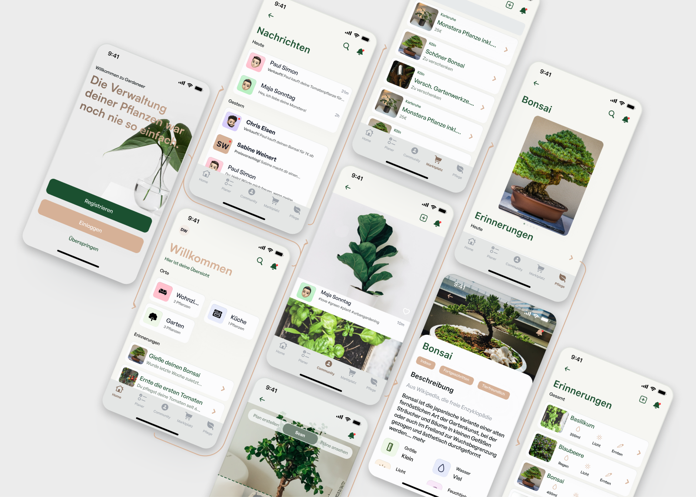

Introduction
The design of a mobile app plays a crucial role in the success of the product, especially when it comes to user engagement and satisfaction. In this project, the goal was to create a mobile app design for an urban gardening app using Figma, a popular design tool. The app aimed to provide urban gardeners with easy-to-use features to grow plants and vegetables in small spaces.
To develop the design I went through a design process in Figma. I analyzed the requirements for the App, created wireframes, set up a flowchart, and adapted all to the mobile design.
Software and tools
The design process involved analyzing user needs, creating a user-friendly interface, and testing the design with real users. The app design featured features like plant and seed selection, soil preparation, and watering and fertilizing reminders. The use of Figma allowed efficient prototyping and testing of the app design.
Conclusion
The design of a mobile app for an urban gardening app requires a user-centered design approach to ensure ease of use and functionality. By using Figma to design the app, we were able to create a user-friendly and intuitive interface that met the needs of urban gardeners.